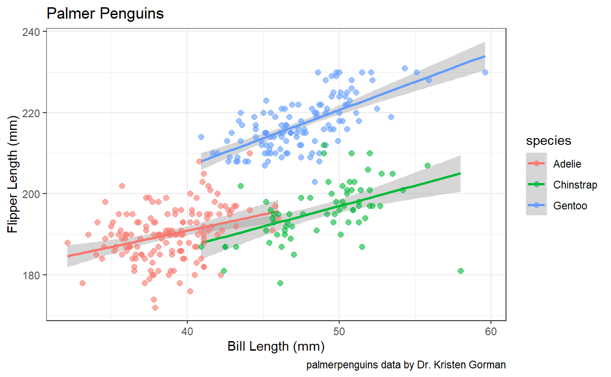
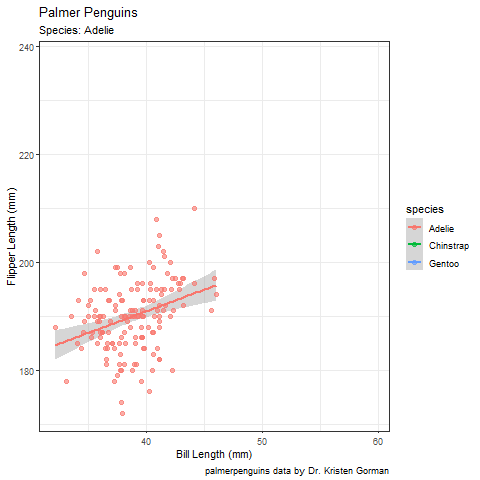

TidyTuesday Penguins
by rbkeeney, 28 Jul 2020
Introduction
In my 1st ever TidyTuesday, I felt inspired by Asmae Toumi’s (@asmae_toumi) recent twitter post about creating a caladown site through github. Here’s a link to the guide she posted: Youtube Video
It took Asmae 15 minutes to deploy her site.
It took me about 6 hours. I’ve never used git or created a github repo from R before today. A summary of how it went?
- Gownload git
- Google how to use git
- Learn a new cuss words
- Crash R a feww times
- Learn more cuss words
- Learn how to set directories and remove “.git/index.lock” files
- Create a SSH key
- Create a Github token
- Troubleshoot why R crashes when I run “commit” or “push”
- Fix it
- Repo is working!
- Break post code
- Ugh.
So. Much. Fun.
and yes, eventually I got it figured out
Getting Started
Finally getting to the R code (the easy portion!), my Tidytuesday entry about creating a caladown site, using rMarkdown and some datapasta, and eventually making a simple animated plot.
First, let’s install the our libraries and load them, for more detail check out the post here
#install.packages("tidytuesdayR")
library(tidytuesdayR)
library(tidyverse)
library(gganimate)
library(glue)TidyTuesday makes is easy to get the data. BTW, ctrl+alt+i -> “insert new code section” is wonderful. For more on rMarkdown: rMarkdown Intro
tuesdata <- tidytuesdayR::tt_load('2020-07-28')
#>
#> Downloading file 1 of 2: `penguins.csv`
#> Downloading file 2 of 2: `penguins_raw.csv`
penguins <- tuesdata$penguinsDatapasta
I also wanted to try out a neat little package out there called datapasta… you can load it like so if you don’t have it. For more detail, you can visit Datapasta.
#install.packages("datapasta")Datapasta allows you to paste data from the web directly into your code in about 2 seconds.
- Control+C (windows)
- Control+Shift+T (after setting up the new keyboard shortcuts)
Add in a little gt:gt() or knitr:kable() and you’ve got yourself a nice little table to play with, additional formatting purely optional. After the learning git + github all day, I’m going to use knitr:kable() can call it day.
tibble::tribble(
~variable, ~class, ~description,
"species", "integer", "Penguin species (Adelie, Gentoo, Chinstrap)",
"island", "integer", "Island where recorded (Biscoe, Dream, Torgersen)",
"bill_length_mm", "double", "Bill length in millimeters (also known as culmen length)",
"bill_depth_mm", "double", "Bill depth in millimeters (also known as culmen depth)",
"flipper_length_mm", "integer", "Flipper length in mm",
"body_mass_g", "integer", "Body mass in grams",
"sex", "integer", "sex of the animal",
"year", "integer", "year recorded"
) %>%
knitr::kable()
| variable | class | description |
|---|---|---|
| species | integer | Penguin species (Adelie, Gentoo, Chinstrap) |
| island | integer | Island where recorded (Biscoe, Dream, Torgersen) |
| bill_length_mm | double | Bill length in millimeters (also known as culmen length) |
| bill_depth_mm | double | Bill depth in millimeters (also known as culmen depth) |
| flipper_length_mm | integer | Flipper length in mm |
| body_mass_g | integer | Body mass in grams |
| sex | integer | sex of the animal |
| year | integer | year recorded |
Animated plot
Now I’m going to make a simple plot… flipper length x bill length should do nicely.
p1 <- penguins %>%
ggplot(aes(y = flipper_length_mm, x = bill_length_mm,color = species,group = species)) +
geom_smooth(method=lm) +
geom_point(size = 2, alpha = 0.6) +
theme_bw() +
labs(title = "Palmer Penguins",
caption = "palmerpenguins data by Dr. Kristen Gorman",
x = "Bill Length (mm)",
y = "Flipper Length (mm)")Let’s see what the plot looks like:
p1

To create an animation from the picture, the gganimate library is needed (loaded previously). I also like to use “glue” to easily paste information from the data. Here, I use the “closest_state” command to update the subtitle with which species is being displayed.
p1_anim <- p1 +
transition_states(species) +
labs(subtitle = "Species: {closest_state}") +
ease_aes('cubic-in-out')To display the animation, just call animate(). This take forever to knit, so I’m going to exclude it from the rMarkdown.

Finally, if you wanted to save the simple animation locally for later use (Twitter anyone?), you can save the last animated file using anim_save()